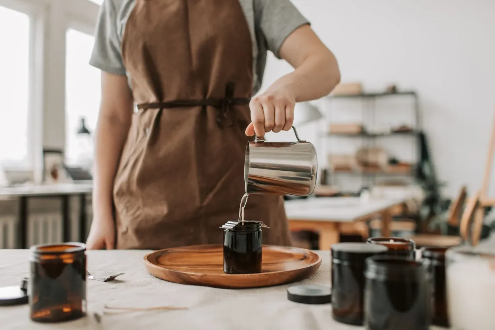

Tampa
A tampa guarda o perfume.
Fechada, ela segura o aroma da cera entre um uso e outro e protege a superfície da poeira. Madeira ou metal, sempre do diâmetro exato do pote.
Francinete · velas artesanais
Aprenda com a Francinete a fazer velas artesanais, peça por peça, do pavio à chama.
Ver os cursosPor fora, parece simples. Por dentro, são sete escolhas.
Vamos abrir esta vela e olhar cada uma delas, na ordem em que você vai aprender.
Tampa
Fechada, ela segura o aroma da cera entre um uso e outro e protege a superfície da poeira. Madeira ou metal, sempre do diâmetro exato do pote.
Pavio e chama
Algodão ou madeira, na espessura certa para a largura do pote. Fino demais, a chama afoga e cava um túnel na cera. Grosso demais, ela fumaça. É a escolha mais técnica da vela.
Fragrância
Topo, corpo e fundo: o que você sente ao abrir o pote, o que aparece quando a vela aquece e o que fica no ambiente. Óleos essenciais e essências entram na medida certa, para a cera não suar.
Cera
Soja ou coco, que costumam queimar de forma mais limpa e lenta, sem a fuligem preta nas paredes. Você aprende a temperatura de cada etapa, do derretimento ao despejo.
Cumbuca de alumínio
A vela é moldada dentro de uma cumbuca pequena de alumínio, que depois se encaixa no recipiente. Quando a cera acaba, troca-se só a cumbuca, e o pote continua na sua mesa.
Recipiente
Vidro âmbar ou cerâmica, que aguentam o calor e protegem a fragrância da luz. Depois da última queima, ele vira vaso, porta-pincel ou pote de novo.
Feito à mão
Rótulo, selo e lote pequeno. Cada vela sai um pouco diferente da outra, e é isso que faz alguém guardar o pote.
Do bloco de cera à primeira chama, você faz cada etapa com as próprias mãos.
Banho-maria e termômetro: a cera derrete devagar, sem queimar.
A essência entra na temperatura certa, para o aroma ficar na vela e não no ar da cozinha.
Colado no fundo e preso no alto, ele seca reto, bem no centro do pote.
Devagar, rente à parede do pote, para a superfície secar lisa.
A cera descansa, o aroma assenta, e só então vem a primeira queima.
Você sai da aula com a sua primeira vela, pronta para acender.
Ver os cursosComecei a fazer velas por hobby, testando cera, pavio e aroma até acertar a queima. Aos poucos, as amigas começaram a pedir para aprender.
Hoje eu ensino o que aprendi errando e acertando, sem segredo guardado. Você não precisa de experiência, só de vontade de sujar as mãos de cera.
Francinete

Escolha como você quer aprender.
Online
Cinco aulas gravadas para assistir no seu ritmo, de casa.
Presencial
Duas horas de mãos na massa em Brasília, ao lado da Francinete.
Ficou com alguma dúvida? Fale direto com a Francinete.
Falar no WhatsApp